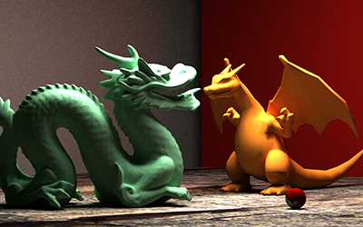
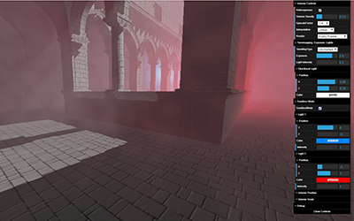
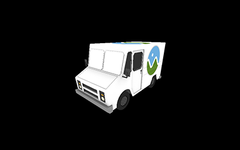

Path Tracer

Path Tracing is a rendering technique that renders
3D scenes as realistically as possible.
Monte Carlo estimation is used to
approximate the light energy from all directions
for any point in a scene.
Features
global illumination,
multiple importance sampling, and
volumetric rendering.
Heatstroke

Heatstroke is a real-time physically-based volumetric renderer
that is based on EA's Frostbite Engine
presented at Siggraph 2014 by Sebastien Hillaire.
Volumetric rendering is a technique to create fog, smoke,
and other similar effects.
Features
heterogeneous and homogenous media,
god rays,
shadow mapping,
and tone mapping.
Stay Woke
VR experience where the player must escape without
waking the bear and getting attacked by the bear.
Check out our game trailer here!
Hand of God
Cooperative VR Endless Runner
The player runs endlessly on a terrain while battling enemies.
The god player (VR)
must build floor tiles to bridge the gaps between different terrains
for the player to run on.
Check out our game trailer here!
GPU Rasterizer

Implemented a basic graphics pipeline to render meshes.
Features UV Texture Mapping,
Line, Point, and Triangle Rasterization Primitives, and
Naive Backface Culling.
Mesh+Rig Editor

Meshes (.obj) can be loaded into a half-edge data structure
and skeletons (.json) are skinned to the mesh.
The user can move the joints to pose the mesh as well as
adjust the joint influence on the mesh.